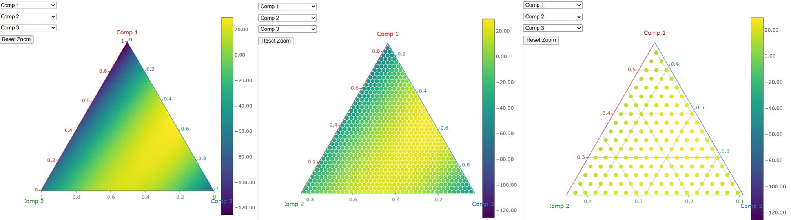

📕 Ebook
StatMate™ - Mixing-DEMO
-3
Démo simplifiée. Cette version fonctionne uniquement avec l’exemple intégré. Les fonctions d’import, d’export et de choix du plan sont restreintes pour la démonstration.
Run StatMate™ Mixing
StatMate™ Mixing takes the number and Min & Max of each compounds of the mixture and propose and mixture plan according to the algorithm chosen. The operator selects the algorithm for calculating the mixture plan, which is then used to determine the mixture's composition: Full centroïd or Fractional. Then the operator defines the number of ingredients (form 3 to 8). The more ingredients there are, the more trials there will be. It depends of the algorithm selected :
| # Ingredient | 3 | 4 | 5 | 6 | 7 | 8 |
|---|---|---|---|---|---|---|
| # Full Centroïd | 7 | 15 | 31 | 63 | 127 | 255 |
| # Fractional | 6 | 10 | 15 | 21 | 28 | 36 |
❓ Modele: Full centroïd or Fractional.Plan ?
🖊️ Ingredients: How many ingredients ? (up to 8).
🧪 Min & Max: Edit the min and max for each product and edit their names.
🧪 Mixing Table: Enter your results for each mix.
印发 Print: Print the trial plan & equation or 💾 Export or 📂 Import plan (JSON).
📐 Ternary Axes: Pick 3 elements for the ternary plot using the drop downs. Fix other ingredients at a defined proportion if needed.
📐 Ternary Graph: Explore the response for all blends of the selected three ingredients. Colors indicate performance at each mixture point.
📊 Equations: View the model and find the coordinates for min & max responses.
🖊️ Ingredients: How many ingredients ? (up to 8).
🧪 Min & Max: Edit the min and max for each product and edit their names.
🧪 Mixing Table: Enter your results for each mix.
印发 Print: Print the trial plan & equation or 💾 Export or 📂 Import plan (JSON).
📐 Ternary Axes: Pick 3 elements for the ternary plot using the drop downs. Fix other ingredients at a defined proportion if needed.
📐 Ternary Graph: Explore the response for all blends of the selected three ingredients. Colors indicate performance at each mixture point.
📊 Equations: View the model and find the coordinates for min & max responses.
📘 User Manual
Ternary Mixing Plan
StatMate™ Mixing
StatMate™ Mixture designs are a special class of experimental designs used when the response depends on the relative proportions of components in a blend rather than their absolute amounts. StatMate™ Mixture can be structured as Centroid or Full factorial-type experiments. They are widely applied in industrial fields where formulations involve combining several ingredients
Buttons & Commands
Fractional⯆ or Full Centroid⯆ selector allows coarse or fine analysis.
N⯆ selector gives the number of ingredients
📂 Import Data: Load or 💾 Export Data Download the data CSV/txt/xls/json file.
印发 Print Prints the data table and 📊 Equation shows the equation which is updated dynamically.
📘 User Manual and 📕 Ebookcan be accessed at any time.
Results
StatMate™ Mixing provides a zoomable ternary mixing plan and the final equation Result=F(compi)

StatMate™ - Mixing Plan - DEMO
© 2025 SciencExpert. Website designed and developed by  SciencExpert™. All rights reserved. Unauthorized use or reproduction is prohibited.
SciencExpert™. All rights reserved. Unauthorized use or reproduction is prohibited.